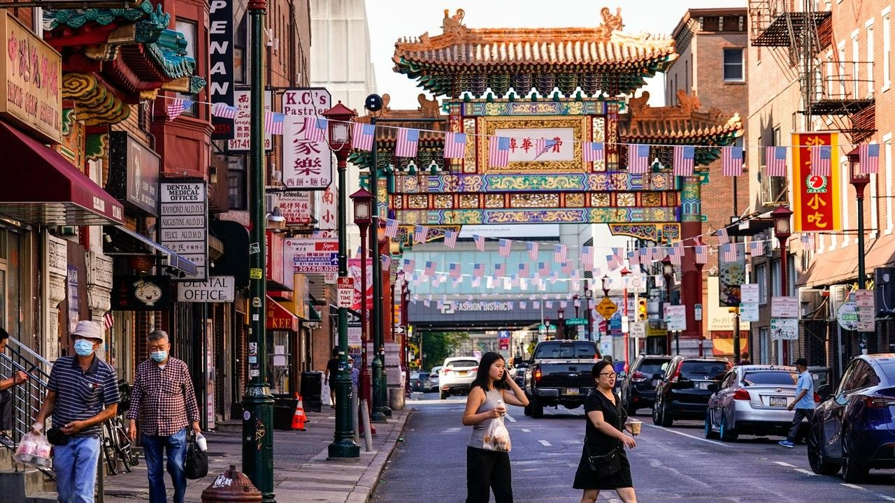

Grant approved for park over 6-lane highway reconnecting Philadelphia ChinatownDecades after Philadelphia's Chinatown was bisected by a sunken expressway, city officials and federal lawmakers said Monday that they secured a grant to reconnect the community by building a park over the six lanes of traffic. The $159 million grant to build a three-block-long park over the Vine Street Expressway will come from the infrastructure law President Joe Biden signed in 2021. "We're finally on the path of reconnecting Chinatown," U.S. Sen. Bob Casey said at a news conference in the neighborhood. The grant is part of a yearslong effort to help repair the damage done to Chinatown by the six-lane expressway that opened in 1991 despite protests by neighborhood residents. The money for the Chinatown Stitch comes as Chinatown’s boosters are engaged in their latest fight against a major development project, this time a proposal to build a new arena for the Philadelphia 76ers a block away. John Chin, executive director of the Philadelphia Chinatown Development Corp., called the Chinatown Stitch "transformative unlike any that Chinatown has experienced." He said he was "awestruck" by the grant's approval. "What it means is that you will no longer see this division, you will no longer notice that Chinatown is divided by a large wide boulevard," Chin said at the news conference. "It will shrink the boulevard, the highway will be capped underneath and no one will see it and it will create greenspace and community space and amenities that our community never had." Construction is expected to begin in 2027, Chin said. The money for the project came from a program designed to help reconnect communities that had been divided by highways or other transportation projects. The Vine Street Expressway had been devised as a way to relieve traffic congestion and provide a quick connector between Interstates 76 and 95. Combined with its frontage roads, the expressway encompasses 13 lanes, running two miles on the northern edge of central Philadelphia. It took away 25% to 40% of Chinatown, said Deborah Wei, who has helped organize protests against major development projects that encroach on Chinatown. The Chinatown Stitch "is just like a small, tiny way of repairing some of the massive damage that’s been done over the years," Wei said. Chinatown residents have fought against several major developments that they say have boxed in or otherwise affected the community. They won some — helping defeat proposals for a Philadelphia Phillies stadium and a casino — and they lost some. Wei said the Chinatown Stitch should not be viewed as "gift" to the community in exchange for the 76ers arena, which the community still opposes. "This would have happened with or without the arena proposal, because it is an initiative to repair this damage," Wei said. "No one is being asked to take an arena in order to get it." |
 |